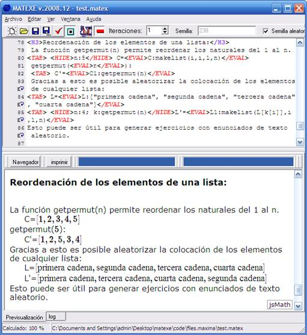

En el siguiente ejemplo se muestra como reordenar aleatoriamente todos los elementos de una lista.

La función getpermut(n) devuelve una lista con los números naturales del 1 al n reordenados aleatoriamente. Este listado aleatorio posibilita reordenar cualquier otra lista. Si k contiene la lista generada por getpermut: [4, 2, 3, …], entonces al acceder a L[k[1]], L[k[2]], L[k[3]], … se obtendrá por ejemplo la secuencia L[4], L[2], L[3], …
Created with the Personal Edition of HelpNDoc: Free iPhone documentation generator